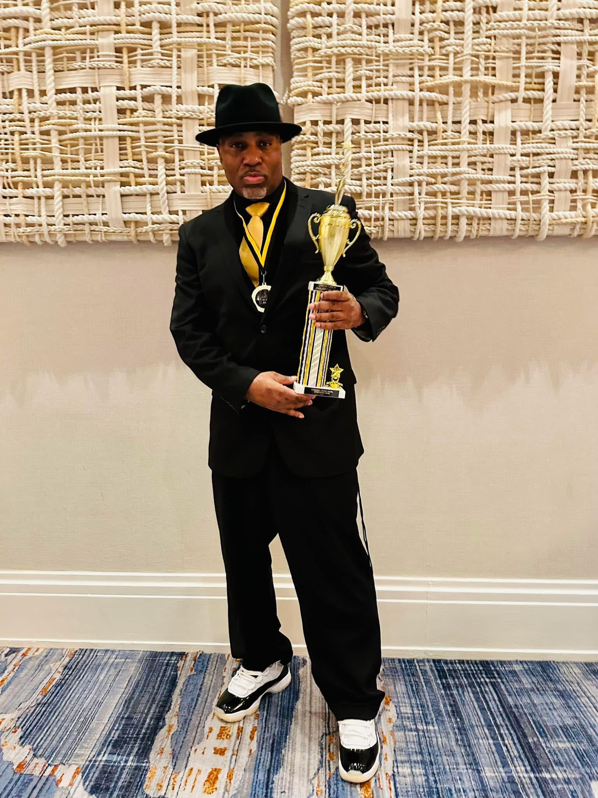

Meet The Instructor
Stefhon Cave is the instructor for TCH. His love for dancing started long before line dancing. He was born a dancer and will always be a dancer.
Stefhon started line dancing in 2011 in Greensboro at Peeler
Recreation Center in Mr. Warren Gamble's Jus Havin Fun
class on Wednesday nights. He began learning line dances and
immediately developed a love for it. The ore he learned, the
more he wanted to know. He then wanted his own class. Once
Mr. Warren retired, Stefhon took over his class. Because of
his love for wanting to know and learn more, he was called
Spongebob
. Major Swagg had a smoothness to his style
of dance. He also began a class on Tuesday evenings at Brown
Recreation Center, which became the class that Tri-City
Hustlerz
TCH was created. With his love of dances, He
continued learning and begin to create dances. He began
attending line dance events to dance with fellow line dancers
in the community. He is a UC nominated award-winning great
instructor. Once TCH commenced hosting events, he created
the Swaggie Award
to recognize those in the line dance
community. The events would take place in either the summer
Summer Swagg
or the winter, Holiday Swagg
. The first
event hosted by TCH was Holiday Swagg in December 2012.
During the Pandemic, Major Swagg taught classes outside in person, as well as virtually to help keep everyone moving and current on dances.
He now has three classes weekly, in person as well as virtual.
You can find him on the dance floor!